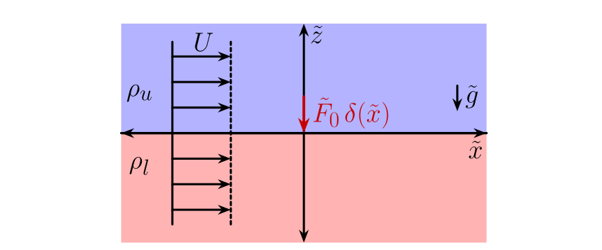

Theory
This section contains the mathematical formulation and numerical implementation of the forced interfacial wave IVP, following the notation of Kadari et al. (2026).
Problem description and nondimensionalisation

A localised pressure forcing $\tilde{p}_e = \tilde{F}_0\,\delta(\tilde{x})$ acts at the interface of two inviscid, incompressible, irrotational fluids of infinite depth. Both streams move at uniform speed $U$ rightwards. In the absence of forcing, the interface is flat at $\tilde{z} = 0$.
After nondimensionalisation using
\[l_c = \frac{U^2}{\tilde{g}}, \quad t_c = \frac{U}{\tilde{g}}, \quad p_c = \rho_l U^2,\]
the key dimensionless groups are
\[\alpha = \frac{\tilde{g} T}{\rho_l U^4}, \quad \rho_r = \frac{\rho_u}{\rho_l}, \quad \beta = \frac{1-\rho_r}{1+\rho_r}.\]
The parameter $\alpha$ measures the relative importance of surface tension.